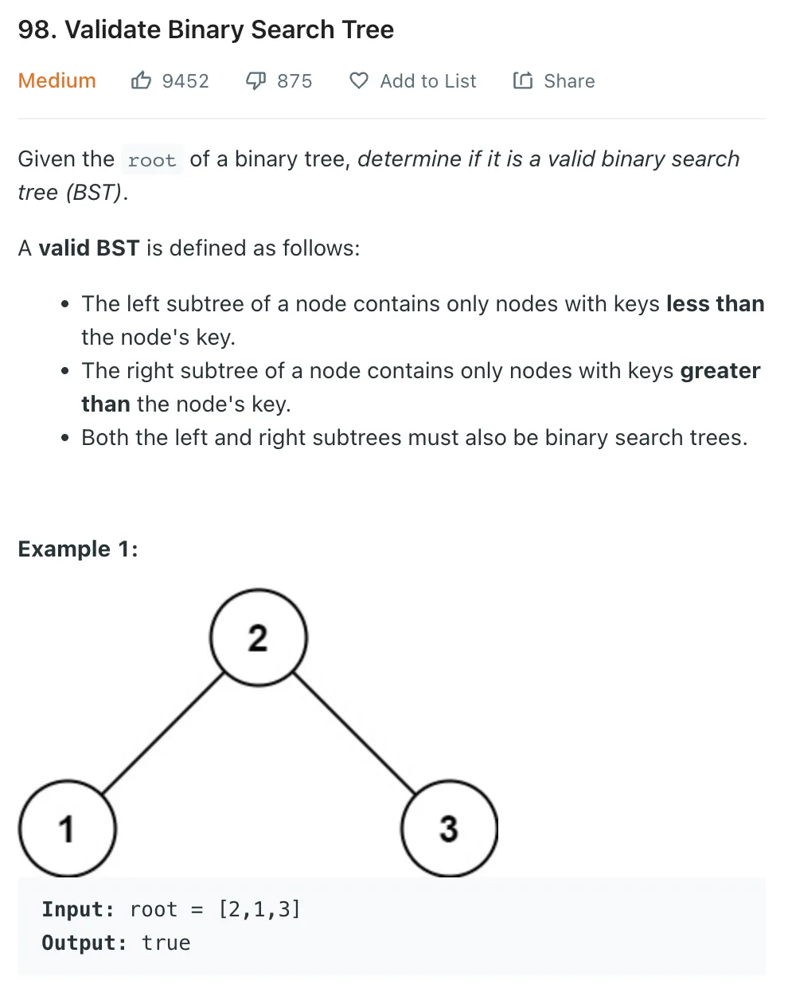
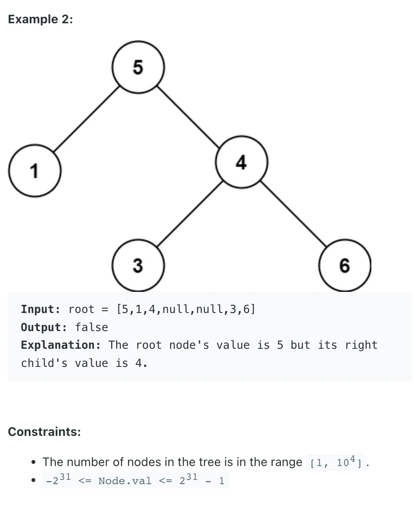

98. Validate Binary Search Tree
考過的公司：Amazon、Bytedance、Shopee、tiktok
Question


✍🏽 My Solution
Runtime: 0 ms, faster than 100.00% of Java online submissions for Validate Binary Search Tree.
Memory Usage: 43.7 MB, less than 61.58% of Java online submissions for Validate Binary Search Tree.
//中序遍历时，判断当前节点是否大于中序遍历的前一个节点，如果大于，说明满足 BST，继续遍历；否则直接返回 false。
class Solution {
private long pre = Long.MIN_VALUE;
public boolean isValidBST(TreeNode root) {
if (root == null) {
return true;
}
// 訪問左子樹
if (!isValidBST(root.left)) {
return false;
}
// 訪問當前節點，如果當前節點小於等於中序遍歷的前一個節點，說明不滿足BST
if (root.val <= pre) {
return false;
}
pre = root.val;
// 訪問右子樹
return isValidBST(root.right);
}
}
🧠 Thought Process
- Why did I choose this particular implementation?
- 參考力扣
- 中序遍历时，判断当前节点是否大于中序遍历的前一个节点，如果大于，说明满足 BST，继续遍历；否则直接返回 false。
- What mistakes did I make?
- 條件寫錯：if (root.val <= pre) 沒有寫到等於
- pre變數沒有放在全域變數
- pre變數要用long型態
Solution #1 [BFS]
Runtime: 2 ms, faster than 23.26% of Java online submissions for Validate Binary Search Tree.
Memory Usage: 42 MB, less than 89.18% of Java online submissions for Validate Binary Search Tree.
class Solution {
long pre = Long.MIN_VALUE;
public boolean isValidBST(TreeNode root) {
Stack<TreeNode> stack = new Stack<>();
TreeNode cur = root;
while (cur != null || !stack.isEmpty()) {
while (cur != null) {
stack.push(cur);
cur = cur.left;
}
//节点为空，就出栈
cur = stack.pop();
if (cur.val <= pre) {
return false;
}
pre = cur.val;
//考虑右子树
cur = cur.right;
}
return true;
}
}
Explanation (in my words)
- How does their solution work?
- 中序遍歷
- What is the space/time complexity of their solution?
- time:O(n)
- space:O(n)